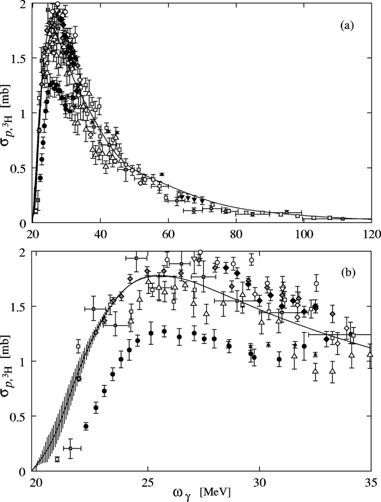
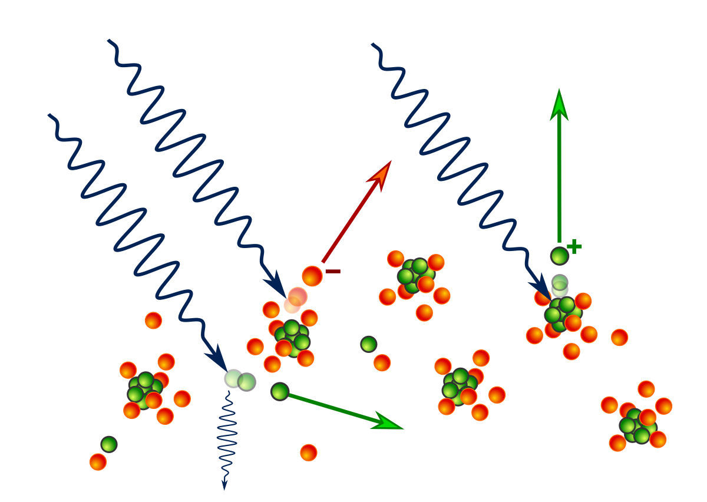

class: center, middle ## <a style="color: gray; font-size: 20pt;"> What are - amongst many - the objectives of </a> <a style="color: darkgreen; font-size: 40pt;">nuclear physics?</a> <a style="color: tomato; font-size: 20pt;">(I) Spectra: </a> <a style="color: dodgerblue;text-align: center;">Relative <strong>stability</strong> of <strong>composites</strong> of neutrons and protons</a> <p style="text-align:center;"><img src=/images/nuclbinding.png style="text-align:center;border-radius: 8px; max-width:75%; margin-top:10px;"></p> --- <a style="color: tomato; font-size: 20pt;">(II) Reactions: </a> <a style="color: dodgerblue;text-align: center;">Response of nuclear <strong>composites</strong> to their like and unlike</a> <div class="grid-container" style="grid-template-columns: auto auto;margin-top: 25px;display: grid;align-items: center;justify-items: center;"> <div class="grid-item" style="background-color: rgb(255, 255, 255);"><p></p> <div class="l1"><a href="https://journals.aps.org/prc/abstract/10.1103/PhysRevC.69.044002">\(^4\text{He}\left(\gamma,p\right)^3\text{H}\)</a></div> <div class="l2" style="color:dodgerblue;">photo dissociation cross sections</div> </div> <div class="grid-item" style="background-color: rgb(255, 255, 255);"><p></p> </div> </div> --- <div style="text-align: center;"> <h3 style="color: black; font-size: 18px;"> <strong>Appropriate</strong> theory for low-energy processes:</h3> <ul style="font-size: 14px;color: gray;"> <li> degrees of freedom: neutrons and protons <i>("What do we measure?")</i></li> <li> symmetry: Galilei \(\approx\) low-energy Lorentz <i>(translational and rotationally invariant <strong>potentials</strong>)</i></li> <li> particle statistics and identity: quantum mechanics</li> </ul> <div style="color: darkgreen;"> \(\Rightarrow i\partial_t\Psi(\tilde{r}_1,\ldots,\tilde{r}_A)=\hat{H}\Psi(\tilde{r}_1,\ldots,\tilde{r}_A)\) </div> </div> <div style="color: black;text-align: center;margin-top:5px"> with \(\hat{H}=-\frac{\hbar^2}{2}\sum\limits_i\frac{\vec{\nabla}^2}{m_i}+\sum\limits_{i,j}v_{ij}+\sum\limits_{i,j,k}v_{ijk}\) </div> <h4 style="color: tomato;text-align: center;margin-top: 10px;">Example:</h4> <div style="color: black;text-align: center;margin-top:-20px;font-size:12px"> \begin{eqnarray} v_{ij}&=&\sum\limits_na_n\frac{e^{-n\mu r_{ij}}}{\mu r_{ij}}+\sum\limits_nc_n\frac{e^{-n\mu r_{ij}}}{\mu r_{ij}}\vec{L}\cdot\vec{S}\\ &&+\left\lbrace\frac{b_1}{\mu r_{ij}}\left[\left(\frac{1}{3}+\frac{1}{\mu r_{ij}}+\frac{1}{(\mu r_{ij})^2}\right)e^{-\mu r_{ij}}-\left(\frac{b_0}{\mu r_{ij}}+\frac{1}{(\mu r_{ij})^2}\right)e^{-b_0\mu r_{ij}}\right]+\sum\limits_nb_n\frac{e^{-n\mu r_{ij}}}{\mu r_{ij}}\right\rbrace \left[3\left(\vec{\sigma}_1\cdot\hat{\vec{r}}\right)\left(\vec{\sigma}_2\cdot\hat{\vec{r}}\right)-\vec{\sigma}_1\cdot\vec{\sigma}_2\right] \end{eqnarray} </div> <div style="color: black;text-align: center">But how can we <strong style="color:red">derive</strong> this from a <i>fundamental</i> theory?</div> <div style="color: black;text-align: center;font-size:13px;margin-top:20px"> relativistic quantum field theory <strong style="color:red">\(\to\)</strong> non-relativistic dynamics <i>(Schrödinger, Lippmann-Schwinger)</i> \(\oplus\) few-body potentials </div> <div style="color: black;text-align: center;font-size:12px;margin-top:20px"> Understand the dynamical equation as a <strong style="font-size: 150%;color: dodgerblue;">wave equation</strong> resulting from a Lagrangean/Hamiltonian density: </div> <div style="color: black;text-align: center;margin-top:15px"> \(\mathcal{L}_0=\frac{i}{2}\Psi^*\partial_t\Psi-\frac{i}{2}\Psi\partial_t\Psi^*-\frac{\left(\nabla\Psi^*\right)\left(\nabla\Psi\right)}{2m}\) </div> <div style="color: black;text-align: center;font-size:12px;margin-top:20px"> where the <i>field</i> \(\Psi(\vec{x},t)\) replaces the position \(\vec{x}(t)\) as the fundamental degree of freedom and </div> <div style="color: black;text-align: center;margin-top:15px"> \(\left[\Psi(\vec{x},t),\Psi^*(\vec{x}',t)\right]=\delta(\vec{x}-\vec{x}')\) </div> --- <div style=" background-image: url(images/CCAP_aleph.png);height: 90%;background-size: cover;background-repeat: no-repeat;background-position: center;"> </div> --- <div style=" background-image: url(images/CCAP_bet.png);height: 90%;background-size: cover;background-repeat: no-repeat;background-position: center;"> </div> --- <div style=" background-image: url(images/CCAP_waw.png);height: 85%;background-size: cover;background-repeat: no-repeat;background-position: center;"> </div> --- <div style=" background-image: url(images/CCAP_gimel.png);height: 65%;background-size: cover;background-repeat: no-repeat;background-position: center;"> </div> --- <h3>The front:</h3> <div style="color: black;text-align: center"> <strong style="font-size: 150%;color: dodgerblue;">Renormalized form of an \(A\)-body contact theory</strong>. </div> <div style="color: tomato;text-align: center;font-size:22px;margin-top:20px"> Challenges: </div> <ul style="font-size: 20px;"> <li> Analytical guidance (Faddeev/Yakubovsky style)</li> <li> Accurate numerics</li> <li> Efficient numerics</li> <li> The appropriate expansion point (more in <a href="https://journals.aps.org/pra/abstract/10.1103/PhysRevA.109.022814"> Improved-action approach</a>) </li> </ul> <p style="text-align:center;"><img src=/images/fusion.jpg style="text-align:center;border-radius: 8px; max-width:60%; margin-top:10px;"></p>